Fósseis de trilobitas. Tamanho (comprimento): entre 3 cm e 10 cm
Há milhões de anos, o mundo era geograficamente diferente de como se mostra hoje. No Período Cambriano, um imenso continente – Gondwana – se dispunha próximo à Linha do Equador, fato que certamente afetava as correntes de circulação oceânicas e atmosféricas,
influenciando o clima e a diversidade de seres vivos encontrados nesse período. Da conhecida “explosão do Cambriano” nos restam apenas registros fósseis para tentar explicar a origem e a ancestralidade das espécies atuais.
Dentre todos os fósseis de animais invertebrados já encontrados, os dos trilobitas são os mais simbólicos registros da antiga fauna. Pertencente ao filo Arthropoda, o subfilo Trilobita (do grego trilobito, que significa
“com três lobos”) inclui cerca de 15 mil espécies conhecidas somente em registro fóssil. Os fósseis desses animais são encontrados em rochas sedimentares marinhas de todo o planeta, o que indica sua ampla distribuição durante
o Cambriano. Além de terem o corpo revestido por um exoesqueleto rígido, os trilobitas apresentavam olhos complexos capazes de produzir imagens, os mais antigos já encontrados em membros do reino animal.
Quais aspectos morfológicos contribuíram para a ampla distribuição dos artrópodes em diferentes tipos de hábitat?
Como se classificam os artrópodes atuais?
Qual é a importância dos artrópodes sob os pontos de vista econômico e ecológico?
Neste capítulo serão abordadas as habilidades
EM13CNT202
Filo Arthropoda
O filo Arthropoda representa o maior e mais diverso filo do reino Animalia, correspondendo a cerca de 81,5% das espécies vivas de animais atualmente. Os membros desse filo se distribuem por quase todos os ambientes, o que lhes
confere uma imensa variedade de estilos de vida e de dimensões corporais. Em 1848, o termo “Arthropoda” (do grego arthro e podos, que significam, respectivamente, “articulados” e “pés") surgiu em referência à característica
marcante do corpo desses animais: a presença de pernas articuladas. Entretanto, devemos pontuar que, além das pernas, outras estruturas presentes em alguns grupos de artrópodes mostram-se articuladas, como asas, antenas
e peças bucais.
Estrutura geral dos artrópodes
Semelhante aos outros filos apresentados nesta unidade, o filo Arthropoda inclui organismos triblásticos, protostômios e celomados. Os artrópodes apresentam corpo segmentado tanto interna quanto externamente. Em algumas
áreas do corpo desses animais, determinados segmentos se fundem originando os tagmas e, assim, criando regiões com formas e funções distintas. A quantidade de tagmas é variável dentro dos grupos dos artrópodes, bem como
o número e os tipos de apêndices articulados presentes nessas regiões.
Tagmose é o termo utilizado para fazer referência ao processo de fusão de segmentos, que dá origem aos tagmas
Externamente, o corpo dos artrópodes é revestido por um exoesqueleto quitinoso que está diretamente associado ao sucesso evolutivo desses animais na conquista dos diferentes ambientes. Para compreendermos como esse revestimento
está organizado, imaginemos uma daquelas armaduras medievais: todo o corpo do combatente era protegido por peças rígidas feitas de ferro fundido, porém a habilidade de movimentação e locomoção do indivíduo permanecia. Nos artrópodes, as placas rígidas externas ficam encaixadas umas nas outras, possibilitando o revestimento dos tagmas sem que a mobilidade desses animais seja afetada. Os apêndices se originam de projeções da parede corporal
e apresentam conjuntos de músculos que permitem a movimentação do animal. Entre outras funções que podem ser atribuídas ao exoesqueleto, destacam-se a proteção e a sustentação corporal. Nos artrópodes terrestres, recobrindo
o exoesqueleto, há ainda uma camada de cera, responsável por torná-los praticamente impermeáveis à água, fato que auxilia muito na ocupação de ambientes terrestres hostis, como as regiões áridas.
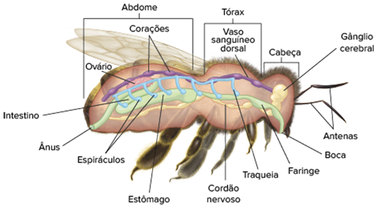
BRUSCA, R. C. Invertebrados. 3. ed. Rio de Janeiro: Guanabara Koogan, 2013
Anatomia de um artrópode. Nos insetos, existem 3 tagmas: cabeça, tórax e abdome.
Crescimento dos artrópodes
Embora as vantagens oferecidas pela presença de exoesqueleto aos artrópodes tenham garantido o sucesso evolutivo desse filo, a existência dessa estrutura também traz algumas limitações para esses animais. Retomando a analogia
da armadura, ao consideramos que elas são feitas sob medida para o indivíduo que venha a utilizá-la, imagine que uma criança tenha ganhado sua primeira vestimenta de ferro e que não queira mais retirá-la. Durante um período,
seu corpo ficará confortável lá dentro, porém, à medida que a criança crescer, o espaço interno começará a ficar apertado, sendo necessário realizar a troca por uma armadura maior. O problema enfrentado pelos artrópodes
é o mesmo: por suas partes moles estarem armazenadas dentro de uma estrutura rígida, incapaz de se expandir à medida que o animal aumenta de tamanho e de volume corporal, é necessário que haja a substituição desse exoesqueleto.
O processo de troca é conhecido como muda ou ecdise, sendo regulado por dois hormônios: a ecdisona – que estimula e desencadeia o processo – e o inibidor da muda – antagônico ao primeiro. Dessa forma, diferentemente
dos outros animais, o crescimento dos artrópodes é descontínuo, intercalando períodos de crescimento rápido e de parada de crescimento, separados pelo evento de muda.
BRUSCA, Richard C.; MOORE, Wendy, SHUSTER, Stephen M. Invertebrados. 3. ed. Rio de Janeiro: Guanabara Koogan, 2013. Gráfico comparativo do crescimento do corpo dos artrópodes (linha azul) e dos demais animais (linha vermelha)
Fisiologia geral dos artrópodes
A redução do celoma e o desenvolvimento do exoesqueleto resultaram na diferenciação do que então se especializou como a cavidade corpórea principal, a hemocele. Nos artrópodes, diferentemente do que ocorre em outros filos que
também possuem hemocele, essa cavidade e o sistema circulatório se arranjam de modo aberto, isto é, sem haver capilares que garantam a irrigação dos órgãos nela contidos. A fim de assegurar o bombeamento do sangue, ou hemolinfa,
esses animais são dotados de um coração responsável pela ejeção do fluido. A hemolinfa é transportada por curtos vasos até que seja levada à hemocele, proporcionando a distribuição de nutrientes e gases e a retirada de
excretas. O sistema digestório dos artrópodes é completo, com boca e ânus. Também são dotados de peças bucais e outros apêndices acessórios variados, entre os quais se destacam glândulas digestivas, também chamadas de hepatopâncreas,
que facilitam a digestão enzimática. Em relação ao sistema nervoso dos artrópodes, o destaque principal são os órgãos sensoriais, que se mostram presentes e bastante desenvolvidos em alguns desses animais. Os artrópodes
são os primeiros a terem olhos compostos que se constituem de inúmeras unidades fotorreceptoras, conhecidas como omatídeos. O formato desses omatídeos é variável e eles são capazes de detectar movimentos no ambiente ao
seu redor e de formar pequenas imagens que, em conjunto, permitem que o animal enxergue todo o ambiente.
Olhos compostos de uma mosca da espécie Holcocephala fusca. Note que cada olho composto é formado por centenas de omatídeos. Tamanho médio (comprimento): 6 mm
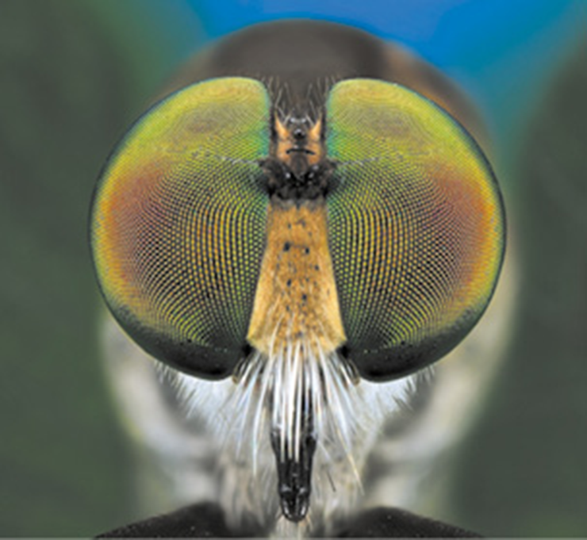
Questão resolvida
1
UEL-PR Uma das características mais fundamentais dos metazoários são os olhos, que se apresentam em uma variedade de tipos. Quase todos são sensíveis à luz, e a maioria possui algum tipo de fotorreceptor, porém somente
os representantes de alguns filos desenvolveram olhos capazes de formar imagens. Os olhos compostos compreendem de poucas a muitas unidades fotorreceptoras cilíndricas denominadas omatídeos. Cada omatídeo contribui
com a imagem de uma parte do objeto, de modo que o conjunto forma a sua imagem total. Assinale a alternativa que indica, corretamente, qual grupo animal é caracterizado pelos olhos descritos acima.
Artrópodes
Anelídeos
Anelídeos
Moluscos
Platelmintos
Resolução:
Alternativa: A Dentre os filos apresentados nas alternativas, o único que apresenta olhos compostos, dotados de omatídeos, é o dos artrópodes. Nos demais filos, os ocelos variam de simples manchas ocelares compostas de
células pigmentares e fotorreceptores até olhos bem desenvolvidos, porém desprovidos dessas unidades.
Classificação
A classificação mais recente dos artrópodes agrupa-os em cinco diferentes subfilos, dentre os quais apenas quatro apresentam representantes vivos atualmente. O subfilo Trilobita, dos animais exibidos na abertura deste capítulo,
é o único que compreende artrópodes identificados apenas em registros fósseis, não havendo nenhum exemplar vivo nos dias de hoje. Os demais artrópodes estão distribuídos em quatro subfilos: Crustacea, Hexapoda, Chelicerata
e Myriapoda.
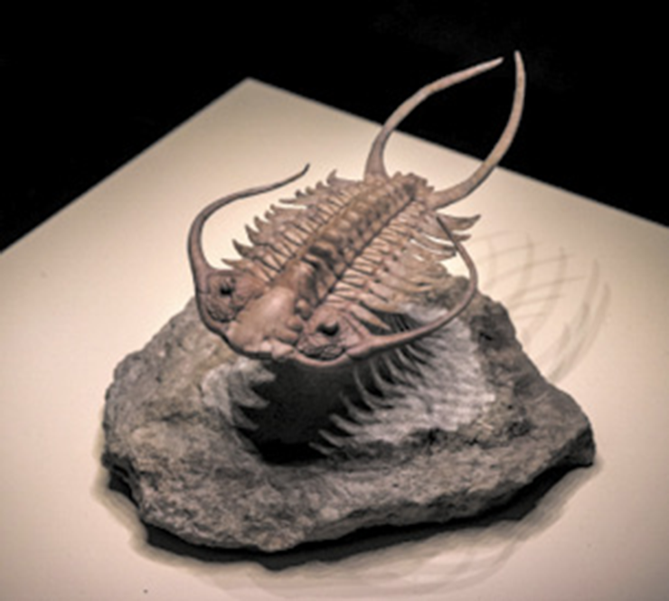
Fóssil de trilobita. Tamanho médio (comprimento): 30 cm
Crustacea
O subfilo Crustacea (do latim crusta e acea, que significam “crosta semelhante”) recebe esse nome em consequência da capacidade apresentada por algumas espécies de enriquecer seu exoesqueleto quitinoso com carbonato de cálcio,
assegurando maior enrijecimento dessa estrutura. Além da ampla variedade de hábitats que podem ser ocupados pelos crustáceos, esses artrópodes contam com uma imensa variedade de formas e dimensões corporais que podem
assumir. A grande maioria das espécies ocupa o ambiente aquático, porém existem exemplares terrestres, como o tatuzinho-de-jardim. Em geral, o corpo desses invertebrados se divide em três (cabeça, tórax e abdome) ou
dois tagmas (cefalotórax e abdome). O número de apêndices locomotores varia entre 5 e 6 pares de pernas articuladas na região do cefalotórax e mais alguns pares localizados no abdome. O primeiro par de pernas articuladas
de lagostas, siris e caranguejos é modificado, com membros em forma de pinça denominados quelípodes, que auxiliam na defesa e na captura de alimentos.
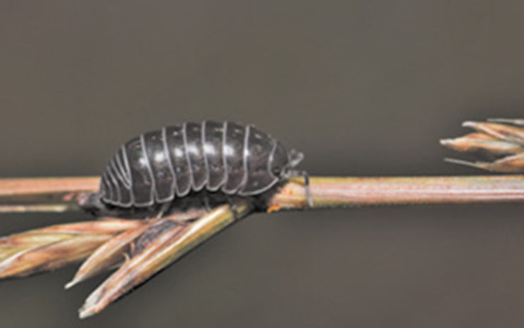
Tatuzinho-de-jardim. Tamanho (comprimento): 1 cm.
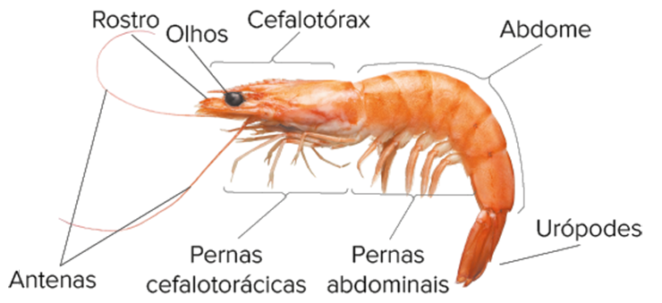
Representação esquemática da estrutura corporal e apêndices dos crustáceos. Neste caso, ilustrados em um camarão. Tamanho médio (comprimento): 10 cm.
A respiração dos crustáceos, geralmente, é realizada por meio de brânquias que se localizam na base das pernas e se dispõem de maneira bastante ramificada. Os gases são transportados com o auxílio de pigmentos respiratórios,
como a hemocianina, presentes no sangue desses artrópodes. A obtenção de alimentos é garantida pela presença de mandíbulas que se encontram ao redor da boca, junto de outros apêndices acessórios. O metabolismo gera
produtos tóxicos que são excretados por glândulas localizadas na região cefálica do corpo desses animais, conhecidas como glândulas maxilares e glândulas verdes, ou antenares. Assim como nos demais artrópodes, os órgãos
dos sentidos dos crustáceos são bem desenvolvidos. Neles, são encontrados órgãos que os auxiliam na manutenção do equilíbrio, conhecidos como estatocistos. A maioria apresenta sexos separados (dioicos) e, em alguns casos,
há evidente dimorfismo sexual. Alguns crustáceos, como as cracas, são hermafroditas.
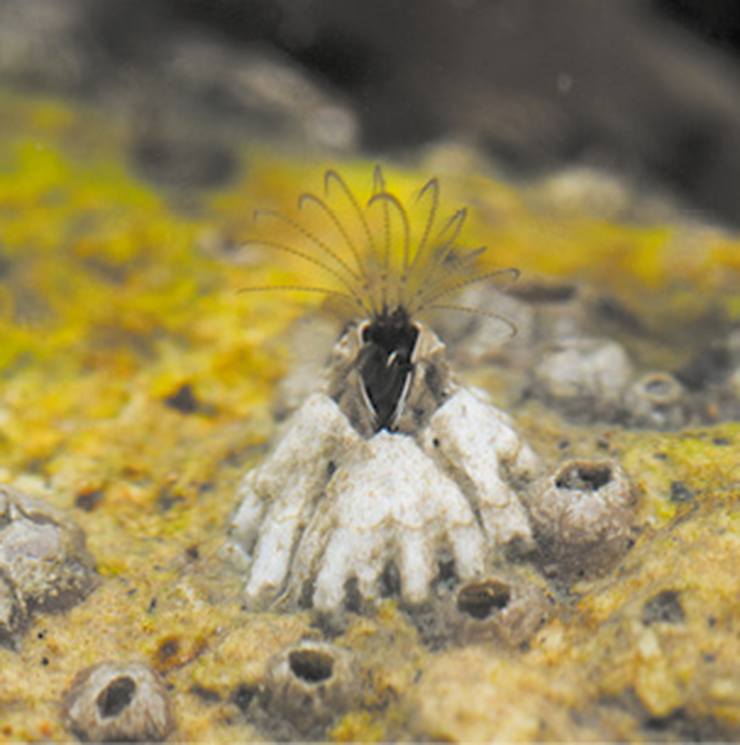
Cracas presas à rocha. Tamanho médio (altura): 2 cm.
Hexapoda
Os artrópodes do subfilo Hexapoda são dotados de seis pernas articuladas e podem ser divididos em duas classes, das quais se destaca a Insecta, representada pelos insetos, que será abordada a seguir.
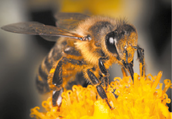
As abelhas, ao coletar o néctar das flores, acabam por polinizá-las. Note que seu corpo está coberto de pólen. Tamanho médio (comprimento): 2 cm.
Insetos
Considerar que o planeta é dominado por insetos não seria nenhum exagero, afinal, eles podem ser encontrados em praticamente todos os hábitats possíveis, desde a água doce e ambientes terrestres até locais improváveis,
como pântanos e fontes de enxofre. Os insetos são artrópodes caracterizados pela presença de três pares de pernas articuladas, pelas habilidades de voo e pela forma de desenvolvimento, que pode ser indireta ou direta.
Entre outras importâncias ecológicas, os insetos são fundamentais para a manutenção de inúmeras cadeias alimentares, pois são os principais predadores de outros invertebrados. Além disso, atuam como agentes
polinizadores de cerca de 80% das variedades de vegetais cultiváveis do mundo; atuam como dispersores de sementes e até mesmo podem agir como pragas que assolam diferentes plantações. O corpo dos insetos é
dividido em três tagmas: cabeça, tórax e abdome. Na região da cabeça, são encontrados olhos compostos e três olhos simples (ocelos), peças bucais articuladas destinadas à alimentação e um par de antenas sensoriais,
que capacita o animal na identificação de odores. É na região do tórax que se prendem, quando presentes, um ou dois pares de asas e os três pares de pernas articuladas.
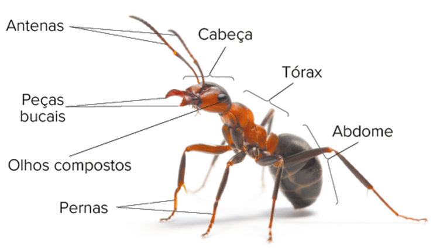
Estrutura corporal e apêndices de um inseto. No caso, uma formiga. Tamanho médio (comprimento): 1 cm.
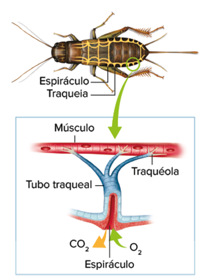
Representação esquemática do sistema traqueal dos insetos.
Os diferentes formatos das peças bucais proporcionam aos insetos estratégias alimentares bastante diversificadas, nas quais se incluem herbivoria, carnivoria e detritivoria. Os aparelhos bucais podem ser dos seguintes
tipos: sugador (borboletas), picador-sugador (mosquitos), mastigador (besouros) e lambedor (abelhas). Além disso, os insetos também podem ser animais comensais ou parasitas. Em relação à fisiologia, os insetos
compartilham da circulação aberta geral dos artrópodes, sendo o sangue (hemolinfa) desprovido de pigmentos respiratórios, o que dificulta o transporte de gases por esse fluido, o qual se destina a transportar nutrientes,
hormônios e resíduos metabólicos. Se considerarmos o estilo de vida ativo desses animais, nota-se a necessidade de um sistema respiratório eficiente que garanta a produção da energia exigida para a execução de suas
atividades. Para isso, os insetos contam com as traqueias, estruturas tubulares internas e ocas que se abrem na superfície corporal por meio de espiráculos.
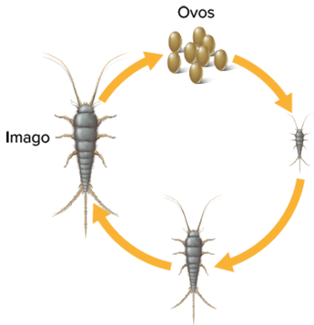
BRUSCA, R. C. Invertebrados. 3. ed. Rio de Janeiro: Guanabara Koogan, 2013. Desenvolvimento de uma traça-do-livro, um animal ametábolo.
As traqueias se ramificam até atingirem os tecidos do animal, e as trocas gasosas ocorrem diretamente entre as células e o ar atmosférico contido nas traqueias. O domínio do ambiente terrestre exige estratégias
que possibilitem a menor perda de água possível pelo animal. Nos insetos, e em alguns outros artrópodes, a excreção passou a ser realizada por túbulos de Malpighi – projeções do sistema digestório com extremidades
que se estendem até a hemocele. Esses túbulos filtram a hemolinfa e absorvem as excretas, eliminando-as na forma de ácido úrico juntamente das fezes. Além de serem animais dioicos e apresentarem fecundação
interna, a maioria dos insetos é ovípara, isto é, seus embriões se desenvolvem dentro de ovos que eclodem no meio externo. Por dependerem diretamente da copulação e da inseminação direta dos gametas, esses artrópodes
desenvolveram comportamentos de corte muito diversificados e sofisticados, como secreção de feromônios, estimulação tátil, luzes e rituais que podem se prolongar por horas. Vale ressaltar que as substâncias químicas
conhecidas como feromônios, além de contribuírem para a reprodução, auxiliam na comunicação entre indivíduos de uma mesma espécie, indicando, em alguns casos, a localização de fontes de alimento. O desenvolvimento
dos insetos pode ser de três tipos: ametábolo, hemimetábolo e holometábolo. No primeiro, também conhecido como desenvolvimento direto, há a presença de formas juvenis geradas após a eclosão dos ovos, que são estruturalmente
semelhantes aos adultos, também chamados imagos. Nesse caso, a cada muda, há o aumento das dimensões corpóreas do animal. Esse tipo de desenvolvimento é comum em insetos não alados, como as traças-do-livro. Nas outras duas variedades de desenvolvimento, a forma e as estruturas do corpo sofrem modificações até atingir o estágio adulto, isto é, ocorre a metamorfose. No desenvolvimento hemimetábolo, a metamorfose
é incompleta e, nesse caso, saem dos ovos seres que diferem pouco dos adultos quanto à forma. Nos gafanhotos, por exemplo, as ninfas (formas juvenis) não possuem asas quando eclodem dos ovos. Após várias mudas,
esses animais crescem, desenvolvem asas e estruturas sexuais, atingindo, assim, a fase adulta de imagos. Outros exemplos de animais que apresentam esse tipo de desenvolvimento são as baratas e os percevejos. Em
geral, as ninfas de animais hemimetábolos compartilham o mesmo hábitat dos imagos.
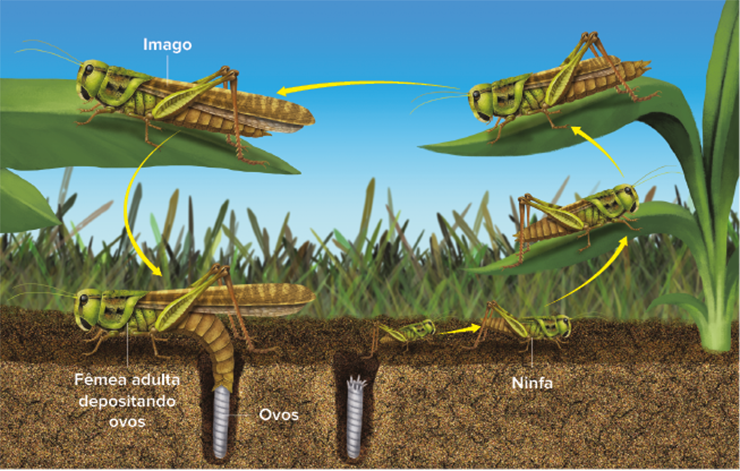
BRUSCA, Richard C.; MOORE, Wendy, SHUSTER, Stephen M. Invertebrados. 3. ed. Rio de Janeiro: Guanabara Koogan, 2013.
Náiade é o termo que designa o estágio juvenil de insetos aquáticos que apresentam desenvolvimento hemimetábolo, como as efeméridas e as libélulas.
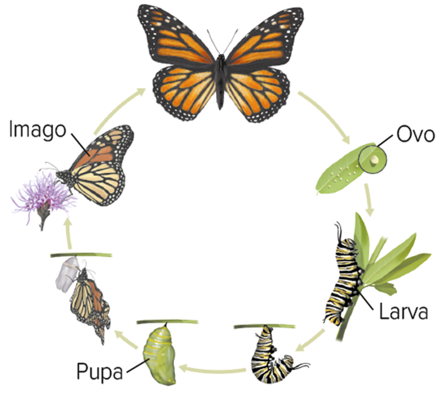
Desenvolvimento holometábolo de borboletas.
Já no desenvolvimento holometábolo, ou metamorfose completa, os estágios juvenis são completamente distintos do imago, desde o padrão corpóreo até o hábitat ocupado. Após a eclosão dos ovos, surgem larvas que são denominadas
de diferentes maneiras, dependendo do animal, por exemplo, lagartas nas espécies de borboletas. Nesse estágio, o organismo é bastante ativo e consome grande quantidade de alimento, o que possibilita que ele atinja
dimensões, por vezes, maiores do que a dos insetos adultos. Ao final dessa fase, as larvas sofrem uma única muda e, então, transformam-se em pupa. Nessa fase, o indivíduo não se locomove e não se alimenta, em geral,
mantendo-se abrigado dentro de um casulo produzido por ele mesmo. Toda a reserva de energia armazenada durante a fase larval é, então, consumida para que a pupa realize as transformações corporais que resultarão
no imago. Além das borboletas, outros exemplos de insetos que passam pela metamorfose completa são os
A sequência dos eventos da metamorfose é controlada pela ação simultânea de dois hormônios: a ecdisona – mesma substância que atua no processo de ecdise dos artrópodes – e o hormônio
juvenil – produzido por um par de glândulas que se localizam próximo ao cérebro do inseto.
Discussão em sala
Os seres humanos e as abelhas
Na terceira temporada da série Black Mirror, exibida pela Netflix, o último episódio, intitulado “Odiados pela nação”, traz um panorama futuro de como a sociedade humana conseguiu lidar com a extinção das abelhas, um dos insetos
mais importantes para a polinização de vegetais dotados de flores. No episódio, a tecnologia permitiu a construção de protótipos estruturalmente idênticos às extintas abelhas, que eram então programados para a realização
da atividade polinizadora. • Após assistir ao episódio e pesquisar a respeito do real risco de extinção das abelhas, discuta com seus colegas quais atitudes antrópicas poderiam contribuir para que o cenário representado
no episódio “Odiados pela nação” não se concretize.
Chelicerata
Os membros do subfilo Chelicerata, ou Cheliceriformes, são comumente chamados de quelicerados, uma vez que são dotados de apêndices conhecidos como quelíceras. Nesse subfilo, destacam-se as classes: Merostomata – representada
pelos límulos ou caranguejo-ferradura – e Arachnida – exemplificada pelos escorpiões, aranhas, ácaros e carrapatos. Os quelicerados ocupam praticamente todos os ambientes terrestres, dominando, assim, grande variedade
de estilos de vida e, de maneira geral, são caracterizados pela presença de quatro pares de pernas articuladas e por um corpo dividido em duas regiões: a prossoma e a opistossoma, as quais podem variar de tamanho e forma
entre as espécies. As quelíceras (do grego khele e keras, que significam, respectivamente, “pinça” e “chifre”) se localizam próximas à boca, contribuindo com o hábito predatório da maioria desses artrópodes. Em algumas
espécies, elas podem ser modificadas em um aparelho sugador, terminar em garras que inoculam veneno ou assumir o formato de pinça. Nesses animais também podem ser encontrados outros apêndices conhecidos como pedipalpos,
responsáveis por funções como locomoção, alimentação, cópula e tato (sensorial).
Apesar de ser muito comum se referir às regiões do corpo dos quelicerados como cefalotórax e abdome, o prossomo e o opistossomo não são homólogos a elas, já que os segmentos que os compõem são distintos.
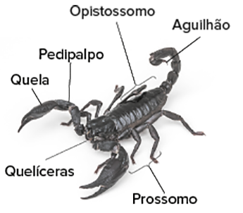
Aracnídeos
Em alguns exemplares de aracnídeos, opistossomo e prossomo encontram-se fundidos, formando um corpo composto de um escudo único, como no caso dos opiliões e carrapatos. Nas aranhas, essas regiões são distintas, e o opissomo
se caracteriza pela presença de fiandeiras e glândulas de seda, responsáveis pela fabricação de teias e casulos. Por todo o corpo desses artrópodes, principalmente nas pernas e nos pedipalpos, podem ser encontrados pelos
longos e finos que funcionam como sensores de deslocamento de ar, além de contribuírem na defesa do animal.
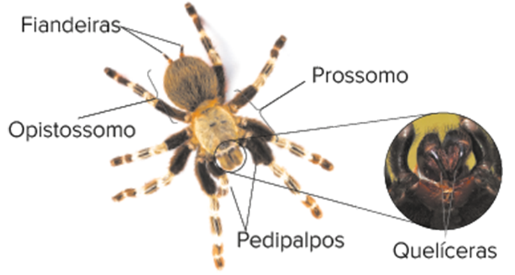
Estrutura corporal e apêndices de uma tarântula. Tamanho médio (comprimento): 12 cm.
Já nos escorpiões, o opistossomo é alongado e com a extremidade (télson) modificada em aguilhão, sendo responsável pela inoculação de veneno. Neles, também estão presentes quelíceras e pedipalpos, estes últimos distintos do
das aranhas, uma vez que suas extremidades assumem formato de pinças preensoras, chamadas de quelas. Em relação à fisiologia, os aracnídeos se diferenciam dos outros artrópodes pelo sistema respiratório, o qual passa
a apresentar, além de traqueias, pulmões foliáceos (também conhecidos como filotraqueias). Essas estruturas garantem a eficiência das trocas dos gases transportados pelo sangue com o auxílio de pigmentos respiratórios.
No sistema excretor, além dos túbulos de Malpighi, estão presentes glândulas coxais, que se abrem na base das pernas desses animais permitindo a eliminação das excretas. Algumas aranhas e alguns escorpiões apresentam
digestão diferenciada. Somando-se às digestões extra e intracelular que ocorrem dentro do corpo, esses aracnídeos são capazes de secretar enzimas digestivas no ambiente, de modo a proporcionar a digestão extracorpórea.
Nesse processo, eles imobilizam a presa inoculando veneno e, na sequência, secretam as enzimas para digestão, posteriormente sugando o produto líquido gerado. De maneira geral, os aracnídeos são caracterizados como
dioicos, realizam fecundação interna e apresentam desenvolvimento direto.
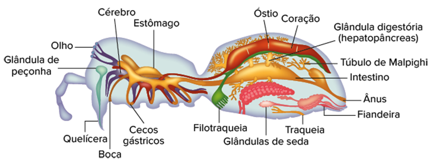
BRUSCA, R. C. Invertebrados. 3. ed. Rio de Janeiro: Guanabara Koogan, 2013 Anatomia interna dos aracnídeos representada na estrutura corporal de uma aranha.
Myriapoda
O subfilo Myriapoda é constituído por animais dotados de grande quantidade de pés, que estão divididos em quatro diferentes classes, das quais destacaremos apenas duas: Chilopoda e Diplopoda, representadas, respectivamente,
pelas centopeias e pelos milípedes.
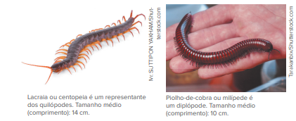
De maneira mais simples, os animais desse grupo costumam ser chamados de miriápodes. Esses artrópodes são encontrados em ambientes terrestres e distinguem-se facilmente dos demais invertebrados por terem seus corpos
divididos em dois tagmas: a cabeça – caracterizada pela presença de um par de antenas e peças bucais (mandíbula e maxilas) – e um longo tronco segmentado – dotado de quantidades variadas de pares de pernas articuladas.
Os quilópodes, também conhecidos como centípedes, caracterizam-se pela presença de um par de pernas articuladas por segmento, além de o primeiro par de pernas ser modificado em garras de veneno, conhecidas
como forcípulas, as quais auxiliam no hábito predatório desses animais. Os diplópodes, também chamados milípedes, têm seu tronco identificado pela presença de dois pares de pernas em cada um dos segmentos.
Logo na sequência da cabeça há um segmento, conhecido como colo, que não apresenta nenhum apêndice e é extremamente rígido. Majoritariamente, os diplópodes são artrópodes detritívoros ou herbívoros que, assim como
os anelídeos, são capazes de transformar a matéria orgânica disponível no solo em húmus. Quando expostos a situação de perigo, esses animais tendem a se enrolar ou a secretar substâncias tóxicas que, em humanos,
podem levar à formação de bolhas na pele em caso de contato.
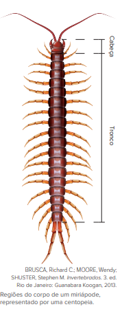
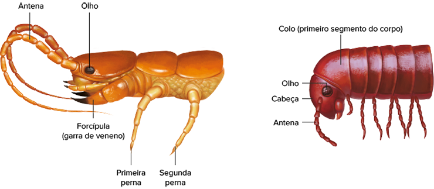
BRUSCA, R. C. Invertebrados. 3. ed. Rio de Janeiro: Guanabara Koogan, 2013. Comparação entre as extremidades anteriores das classes de Myriapoda. A. Quilópodes; B. Diplópodes. Note a diferença no número de pernas por segmento
do corpo entre esses grupos.
Aplicando conhecimentos
1
Indique as três principais características que podem descrever os artrópodes.
2
Quais são as funções do exoesqueleto?
3
Diferencie crustáceos e insetos quanto à respiração e à circulação.
4
Como é o sistema excretor dos crustáceos?
5
Como ocorre a digestão das aranhas?
6
Apesar da grande importância dos insetos no controle de pragas, como agentes polinizadores e produtores de mel e fios de seda, eles também podem desencadear alguns problemas. Cite e explique um problema que pode ser causado
por insetos.
7
Observe o gráfico a seguir:
BRUSCA, Richard C.; MOORE, Wendy; SHUSTER, Stephen M. Invertebrados. 3. ed. Rio de Janeiro: Guanabara Koogan, 2013. Gráfico comparativo do crescimento do corpo dos animais.
Indique em quais animais podem ser encontrados os crescimentos mostrados pelas curvas I e II
Explique o que representam os intervalos A e B
O que está indicado pelo ponto C?
8
Unicamp-SP Um dos grupos mais numerosos de artrópodes, os insetos, passou a ocupar o ambiente terrestre. Algumas estruturas foram relevantes para que os insetos conquistassem a terra firme e ocupassem vários espaços do
planeta, passando a ter importância ecológica e influência na economia.
ndique duas estruturas que possibilitaram a conquista do meio terrestre e explique por que elas foram importantes.
De que forma os insetos exercem influência ecológica e econômica?
CONSOLIDANDO SABERES
1
Uerj 2017 Os primeiros artrópodes eram animais marinhos. Ao longo do processo evolutivo, alguns membros desse grupo sofreram transformações que possibilitaram a eles a conquista do meio terrestre. Uma transformação
que contribuiu para a permanência destes artrópodes nesse ambiente seco foi:
circulação aberta
respiração traqueal
fecundação externa
digestão extracorpórea
2
Unesp 2021 A quitosana é um biopolímero obtido da quitina e tem diversas atividades biológicas importantes, como antioxidante, anti-inflamatória, anticoagulante, antitumoral e antimicrobiana
Este biopolímero pode ser obtido a partir de macerados
da casca de eucaliptos
de algas marrons.
do esqueleto de tubarões
de chifres de bovinos
da carapaça de caranguejos
3
Fuvest-SP 2016 Tatuzinhos-de-jardim, escorpiões, siris, centopeias e borboletas são todos artrópodes. Compartilham, portanto, as seguintes características:
simetria bilateral, respiração traqueal e excreção por túbulos de Malpighi.
presença de cefalotórax, sistema digestório incompleto e circulação aberta
corpo não segmentado, apêndices articulados e respiração traqueal.
corpo não segmentado, esqueleto corporal externo e excreção por túbulos de Malpighi
4
UCS-SP 2016 Uma senhora foi picada por um animal invertebrado e, preocupada, ligou para o Centro de Informações Toxicológicas (CIT), fone 0800 7213000, plantão 24 horas. O CIT solicitou a descrição do animal que,
de acordo com as informações dadas, revelou-se ter quatro pares de patas, cefalotórax e abdômen fundidos e quelíceras. O animal descrito acima trata-se de um
aracnídeo, uma centopeia
aracnídeo, um carrapato.
inseto, um escorpião.
inseto, um percevejo.
diplópode, uma lacraia
5
FMP-RJ 2021 Os insetos conseguiram modificar o próprio corpo com variações quase infinitas. Só uma limitação é aparente: o tamanho. Os maiores insetos conhecidos não medem mais de 30 cm. (...) Por que os besouros
e as mariposas não atingem o tamanho de texugos ou gaviões?
ATTENBOROUGH, David. A vida na Terra. São Paulo: Martins Fontes; Ed. Universidade de Brasília, 1981.
O sistema respiratório dos insetos, fator restritivo para o seu crescimento, é do tipo
alveolar.
alveolar.
cutâneo indireto
cutâneo.
branquial.
6
UEPG-PR 2 2019 Analise a imagem abaixo e assinale o que for correto em relação aos tipos de desenvolvimento de insetos
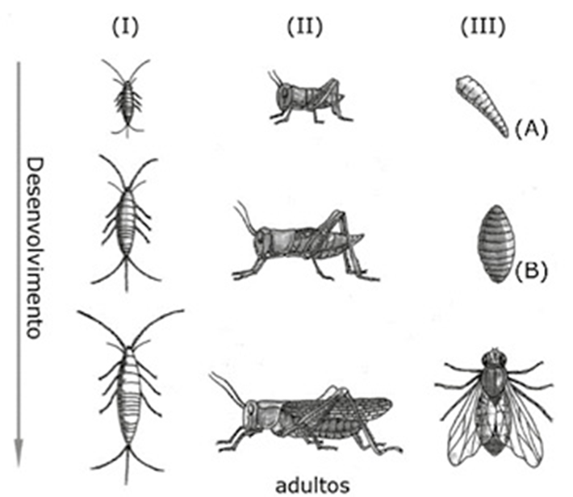
Adaptado de: AMABIS, J. M.; MARTHO, G. R. Biologia dos organismos. 2. ed. Volume 2. São Paulo: Editora Moderna, 2004. p. 386.
01. Em (I), (II) e (III) temos exemplos dos tipos de desenvolvimento indireto: ametábolo, hemimetábolo e holometábolo, respectivamente. 02. Os insetos hemimetábolos estão representados em (II). Nestes, as formas jovens já têm alguma semelhança com o adulto e a semelhança torna-se maior a cada muda. 04. Em (III), temos um exemplo de desenvolvimento indireto com metamorfose completa (holometábolo) de uma mosca. No exemplo, do ovo eclode a larva (A) que, após sofrer um determinado número de mudas, transforma-se
na pupa (B), de onde emerge o adulto ou imago. 08. Em (I), está representado um inseto com desenvolvimento ametábolo. Nesse caso, o desenvolvimento é direto e o termo ametábolo ressalta o fato de não haver grandes transformações durante o desenvolvimento.
Soma:
7
Unesp Analise a tira Níquel Náusea do cartunista Fernando Gonsales.
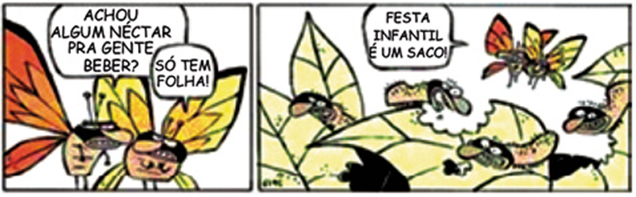
(Folha de S.Paulo, 29.04.2012.)
Com relação aos insetos holometábolos, como os representados nos quadrinhos, é correto afirmar que
os diferentes recursos explorados pelas formas jovem e adulta possibilitam que, em um mesmo hábitat, um mesmo nicho ecológico possa comportar um maior número de espécies.
a forma jovem compõe um nicho ecológico diferente daquele da forma adulta, o que demonstra que a uma mesma espécie podem corresponder diferentes nichos ecológicos, mas não diferentes hábitats.
os diferentes recursos explorados pelas formas jovem e adulta possibilitam que um mesmo hábitat suporte um maior número de indivíduos da espécie.
as formas jovem e adulta competem pelos mesmos recursos em seu hábitat, o que exemplifica um caso de seleção natural.
as formas jovem e adulta competem pelos mesmos recursos em seu hábitat, o que exemplifica um caso de competição intraespecífica.
8
Uece 2018 Durante seu desenvolvimento, os insetos passam por mudanças, através de um processo conhecido como metamorfose. Sobre o desenvolvimento desses animais, é correto afirmar que
gafanhotos são insetos hemimetábolos, pois apresentam processo incompleto de metamorfose
todos os insetos ametábolos precisam passar pela metamorfose para produzir seu exoesqueleto.
moscas são classificadas como insetos holometábolos, pois seu desenvolvimento é marcado por poucas transformações até chegar à vida adulta.
carrapatos e percevejos são insetos que sofrem metamorfose completa, assim como as borboletas.
9
Fuvest-SP 2017 Considere anelídeos, artrópodes e cordados quanto à embriogênese e à metameria (divisão do corpo em uma série de segmentos que se repetem − os metâmeros).
No desenvolvimento do tubo digestório, a abertura originada pelo blastóporo é caraterística que permite classificar anelídeos, artrópodes e cordados em um mesmo grupo? Justifique sua resposta.
Nos anelídeos, os metâmeros podem mudar de forma ao longo do corpo. Isso ocorre também nos artrópodes adultos? Justifique sua resposta.
10
UFRGS-RS 2019 Assinale com V (verdadeiro) ou F (falso) as afirmações abaixo, referentes aos artrópodes.
( )As centopeias apresentam corpo dividido em cabeça e tronco. ( ) Os insetos têm três pares de pernas e dois pares de antenas. ( ) Os escorpiões são aracnídeos que inoculam sua peçonha através dos ferrões das quelíceras. ( ) Os crustáceos geralmente têm corpo dividido em cefalotórax e abdome e um par de antenas. A sequência correta de preenchimento dos parênteses, de cima para baixo, é
V – F – F – F.
F – V – F – V.
F – V – F – V.
V – F – V – V.
V – F – F – V.
11
Mackenzie-SP 2018 Os insetos pertencem ao filo com maior número de espécies catalogadas. Esse grupo de animais está presente em muitos ambientes e possuem características que lhe concederam grande capacidade de
adaptação. São características dos insetos:
corpo dividido em cefalotórax e abdome; excreção por glândulas coxais; respiração pulmotraqueal; sistema circulatório aberto.
corpo dividido em cabeça e tronco; excreção por protonefrídeos, respiração traqueal; sistema circulatório fechado.
corpo dividido em cabeça, tórax e abdome; excreção por células-flama; respiração branquial; sistema circulatório fechado.
corpo dividido em cabeça, tórax e abdome; excreção por túbulos de Malpighi; respiração traqueal; sistema circulatório aberto
corpo dividido em cefalotórax e abdome; excreção por túbulos de Malpighi; respiração pulmotraqueal; sistema circulatório fechado.
12
Famema-SP 2019 Analise o cladograma que relaciona os principais grupos de artrópodes.
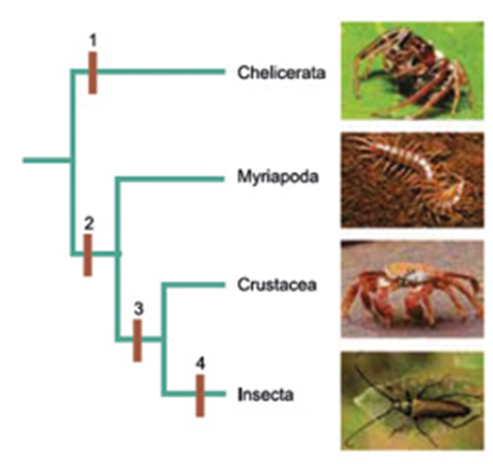
(James Morris et al. Biology: How Life Works, 2013. Adaptado.)
Todos os animais representados realizam a muda ou ecdise. Em que consiste a muda e qual a importância desse fenômeno para esses animais?
Em relação ao cladograma, qual número melhor indicaria o surgimento da grande variação em tipos de apêndices bucais? Justifique por que esses artrópodes constituem um grupo com grande biodiversidade
No enem é assim
As questões selecionadas nesta seção são prioritariamente do Enem, mas questões de vestibulares diversos que apresentam características semelhantes aos itens do referido exame também foram usadas como recurso para estudo.
1
Enem 2018 Insetos podem apresentar três tipos de desenvolvimento. Um deles, a holometabolia (desenvolvimento completo), é constituído pelas fases de ovo, larva, pupa e adulto sexualmente maduro, que ocupam diversos
hábitats. Os insetos com holometabolia pertencem às ordens mais numerosas em termos de espécies conhecidas. Esse tipo de desenvolvimento está relacionado a
proteção na fase de pupa, favorecendo a sobrevivência de adultos férteis
produção de muitos ovos, larvas e pupas, aumentando o número de adultos
exploração de diferentes nichos, evitando a competição entre as fases da vida
ingestão de alimentos em todas as fases de vida, garantindo o surgimento do adulto.
utilização do mesmo alimento em todas as fases, otimizando a nutrição do organismo.
2
O mundo sem abelhas polinizadoras. “Um mundo sem mamangabas seria silencioso, triste e mais pobre”, lamenta o biólogo Jeremy Kerr, referindo-se a esse tipo de abelha. “Muitas espécies de plantas entrariam em declínio, e
os jardins e a agricultura da América do Norte e Europa sofreriam perdas econômicas. Não acredito que alguém não seja capaz de imaginar quantos prejuízos haveria”, continua. “Os tomates, por exemplo, dependem das mamangabas.”
[...]
ANSEDE, Manuel. “O mundo sem abelhas polinizadoras”. El País, 11 jul. 2015. Disponível em: (https://brasil.elpais.com/brasil/2015/07/07/ ciencia/1436292524_856375.html)
. Acesso em: 19 ago. 2019.
No texto, o biólogo fala sobre o efeito negativo do aquecimento global sobre as populações de algumas abelhas polinizadoras. A diminuição no número de abelhas é uma preocupação mundial. Dentre os fatores a seguir, todos são
responsáveis pela redução do grupo desses insetos, exceto:
Fungos e outros parasitas que debilitam esses insetos.
Vírus que causam deformidade nas asas das abelhas.
O uso de animais como controle biológico, para gerenciar as pragas das abelhas.
O uso de pesticidas na agricultura
A redução da diversidade de plantas florais, por conta da agricultura.
3
UFRGS-RS 2018 O cardápio abaixo descreve alguns pratos da culinária brasileira.
Em relação aos animais citados no cardápio, é correto afirmar que
polvos e mexilhões pertencem à classe dos gastrópodes.
camarões pertencem à classe dos aracnídeos.
polvos e mexilhões pertencem ao filo Mollusca.
camarões e mexilhões pertencem ao filo Arthropoda.
todos os animais citados são crustáceos.
4
Mackenzie-SP No filo Arthropoda, destacam-se três principais grupos: os crustáceos, os aracnídeos e os insetos. As principais características consideradas para essa divisão são: a organização corporal; o número de
apêndices locomotores; a presença e o número de antenas, mostradas no quadro abaixo.
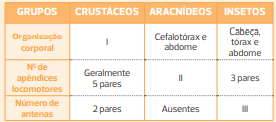
Os espaços I, II e III devem ser preenchidos, correta e respectivamente, por